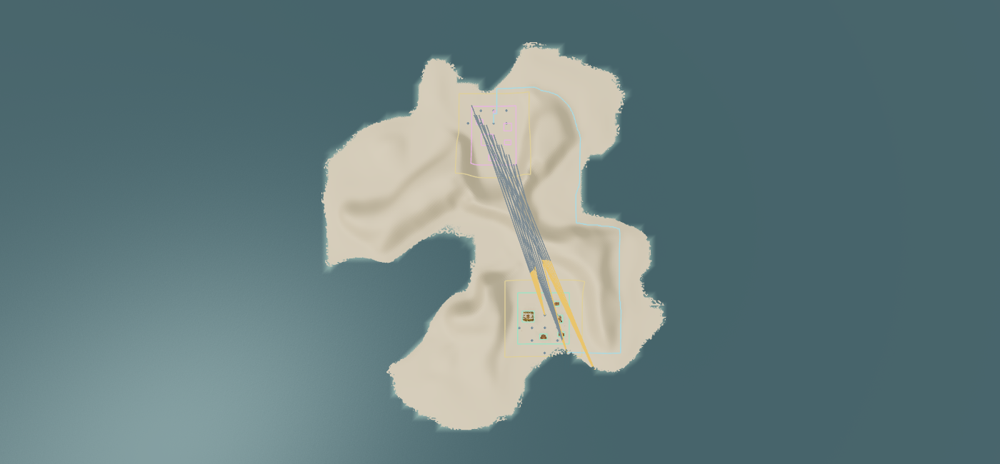
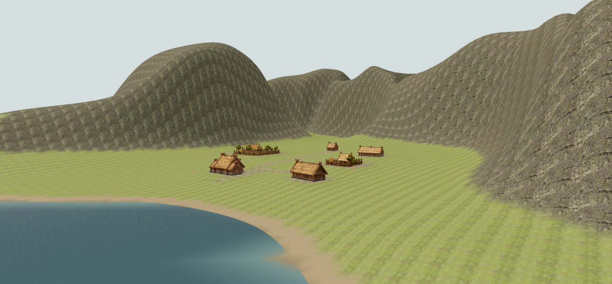
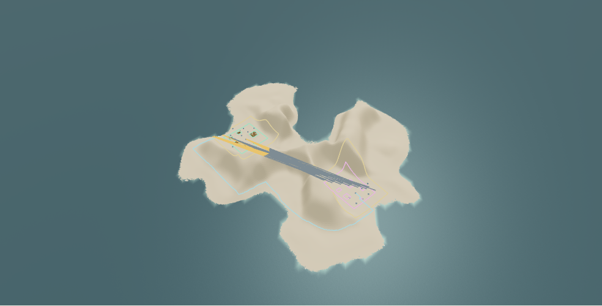

Player & hidden rival sites · v0.3e
Issue #134 · deterministic geography and spatial reservations only.
Initial batch: 1 of 10 seeds accepted. Seed 18 passes; the other nine retain explicit foundation/separation rejections. This is an opt-in Lab stage, not a change to campaign defaults. Read the report · Ten-seed evidence · Browser evidence
Open Environment Lab → Settings → Nordic Island → enable Player & hidden rival sites → seed 18 → Generate World.
Seed 18 · complete island and reservations
Green: player; pink: rival reservation; gold: buffer bounds; cyan: natural access; orange: blocked sightlines. Only a representative subset of rays is drawn; all measured rays are exported.

The documented player starting camera
The same pose used by the visibility proof. Six authored reference parcels at the player site; no CPU village. Nature is disabled to expose terrain occlusion.

Tablet viewport · oblique diagnostic view
1024 × 768 browser emulation; no physical-device claim.
